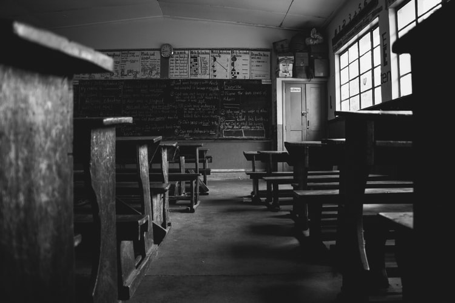

According to the National Center for Education Statistics, only 41% of 4th graders are proficient in math, and only 35% of 4th graders are proficient in reading.
This statistic doesn't look any better for high-schoolers. Only 24% of 12th graders are proficient in math, and only 37% of 12th graders are proficient in reading.
Studies from UNICEF and PBS show that there is great variation in the quality of schools children attend. When parents cannot choose the school their child attends, their child might be left to underachieve in a poorly-performing school.
In many towns and cities across the U.S., educational spending has gone up in the past 20 years, but the quality of public schools has gone down.
